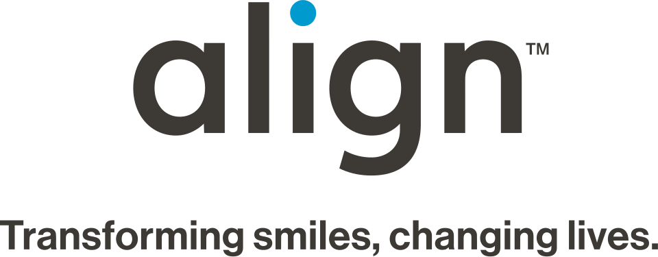

Align Technology
Align Technology는 치과 교정과 수복 진료 과정에 쓰이는 3D 디지털 스캐너와 Invisalign 투명 교정장치를 제조하고 관련 치료 시스템을 공급하는 미국 기업이다.
최종 업데이트

Align Technology는 어떤 브랜드인가
회사는 투명 교정장치와 구강 스캐너를 중심으로 치과 교정 및 수복 진료에 필요한 제품과 업무 체계를 제공한다. 대표 브랜드인 Invisalign은 치아를 단계적으로 이동시켜 배열을 바로잡는 투명 교정 치료 시스템이다.
교정장치는 멕시코에서, 스캐너는 이스라엘과 중국에서 제조하며 치료 계획은 코스타리카에서 작성한다. 의사를 대상으로 교육과 인증을 제공하고 AlignTech Institute를 통해 교육 자료도 공급한다.
Invisalign 치료 환자는 2017년까지 18 million명을 넘었으며 2026년에는 22 million명에 도달했다.
Align Technology는 어떻게 시작되고 성장했나
회사는 Stanford Graduate School of Business 동기인 Zia Chishti와 Kelsey Wirth가 1997년 설립했다. 성인 교정 치료를 받던 Chishti가 유지장치를 연속적으로 사용해 치아를 조금씩 이동시키는 구상을 세웠고 Wirth와 개발자를 찾기 시작했다.
Invisalign은 1998년 Food and Drug Administration 승인을 받았으며 1999년 미국에서 판매를 시작했다. 초기에는 교정 전문의의 저항을 받았으나 소비자 사이에서 확산했고, 회사는 2001년 NASDAQ 기업공개로 $130 million을 조달했다.
2003년 처음 흑자를 기록했고 2005년 일본으로 사업을 확대했다.
Align Technology의 브랜드 아이덴티티는 무엇인가
투명 교정장치 Invisalign과 치과용 3D 디지털 스캐너를 함께 제조하고, 치료 계획과 의료진 교육·인증까지 연결하는 사업 구조가 구분점이다.
Align Technology의 대표 제품과 서비스는 무엇인가
Invisalign은 Align Technology가 제조하는 투명 교정장치 브랜드이며 치아를 여러 단계의 작은 움직임으로 교정하는 치료에 사용한다. 회사는 2005년 교정장치 10개를 사용하는 Invisalign Express 10을 출시하고 2009년 Invisalign 1.5를 공개했다.
복잡한 치료를 위한 Invisalign G3와 G4를 각각 2010년과 2011년 출시했으며, 2012년에는 교정장치 5개를 사용하는 Invisalign Express 5를 추가했다. 2014년에는 깊은 교합 치료용 G5를 출시했으며, 별도로 치과 교정과 수복 진료에 사용하는 3D 디지털 스캐너를 제조한다.
제품 공급과 함께 의사를 위한 교육 및 인증 과정도 운영한다.
Align Technology는 지금 어떤 상태인가
위키데이터 기준 회사 본사는 산호세이며, 지원·소프트웨어 엔지니어링·생산 준비·행정 기능은 캘리포니아에서 수행한다. 홍콩과 호주에는 각 시장에서 Invisalign을 판매하는 별도 자회사를 운영한다.
2026년에는 금형 기반 교정장치 생산을 3D 프린팅 방식으로 전환해 제조 비용과 복잡성을 줄이는 공정 개편을 시작했다.
Align Technology 로고는 어떻게 변해왔나
자주 묻는 질문
Align Technology는 어느 나라 브랜드인가요?
Align Technology는 미국의 헬스·제약 브랜드입니다.
Align Technology는 언제 설립되었나요?
Align Technology는 1997년 설립되었습니다.
Align Technology의 브랜드 아이덴티티는 무엇인가요?
투명 교정장치 Invisalign과 치과용 3D 디지털 스캐너를 함께 제조하고, 치료 계획과 의료진 교육·인증까지 연결하는 사업 구조가 구분점이다.
Align Technology의 대표 제품은 무엇인가요?
Invisalign은 Align Technology가 제조하는 투명 교정장치 브랜드이며 치아를 여러 단계의 작은 움직임으로 교정하는 치료에 사용한다.
Align Technology는 현재 어떤 상태인가요?
위키데이터 기준 회사 본사는 산호세이며, 지원·소프트웨어 엔지니어링·생산 준비·행정 기능은 캘리포니아에서 수행한다.
Align Technology의 본사는 어디에 있나요?
Align Technology의 본사는 산호세에 있습니다(위키데이터 기준).
Align Technology의 공식 웹사이트는 어디인가요?
Align Technology의 공식 웹사이트는 http://www.aligntech.com/ 입니다.
출처와 검증
Align Technology 관련 참고: 공식 웹사이트 · 위키데이터 Q30272258 · 영어 위키백과. 브랜드명은 한글과 원어를 함께 표기하되 데이터에 없는 표기는 만들지 않습니다. 기원 국가·설립연도는 검수된 정의문에서 확인된 값을 우선하고, 없을 때만 공식 웹사이트 URL이 일치하는 위키데이터 개체의 값을 씁니다. 위키데이터 값은 2026-09-12 기준입니다.